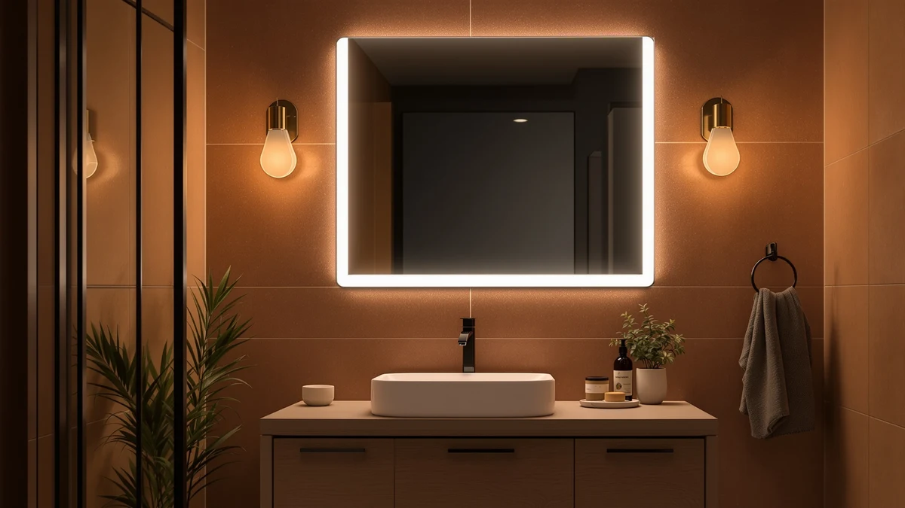

S'bagno LED-Bathroom-Mirror-with-Bluetooth Review (2026): Worth It?


Quick Answer
The SBAGNO 24x32 LED-Bathroom-Mirror-with-Bluetooth mirror pairs a tempered glass and aluminum build with a built-in Bluetooth speaker and dimmable three-color lighting, and at $129.99 it undercuts the pricier Hivone alternative while matching the FlyEcho and Autdot on cost. It's the strongest pick here if you want built-in audio and adjustable lighting on a single-vanity mirror.
Our pick: SBAGNO 24x32 LED-Bathroom-Mirror-with-Bluetooth Dimmable-Lighted-Bathroom-Vanity-Mirror-with-3-Colors，Backlit +, $129.99 Check Price on Amazon
Things to Know Before You Buy
- Size and fit: at 24 inches wide by 32 inches tall, this mirror is sized for a single-sink vanity rather than a wide double-sink wall, so measure your run before you buy.
- Build: the frame pairs tempered glass with an aluminum backing, the same base construction used across most of the LED mirrors in this price range.
- Bluetooth and lighting: this is the only one of the four options with a built-in Bluetooth speaker and dimmable lighting across three color settings, a feature the FlyEcho, Autdot, and Hivone alternatives don't list.
- Price range: at $129.99, the SBAGNO pick matches the FlyEcho and Autdot alternatives and comes in about $16 under the Hivone.
- Reviews: Amazon has not published an aggregate rating or review count for this listing, so we leaned on spec comparison rather than a long buyer track record.
For this s'bagno led-bathroom-mirror-with-bluetooth review, we compared the SBAGNO 24x32 LED-Bathroom-Mirror-with-Bluetooth pick against the FlyEcho, Autdot, and Hivone alternatives on price, features, and verified owner feedback. At $129.99, it costs about the same as the FlyEcho 30x48 and the Autdot 2-pack, and close to $16 less than the Hivone 40x32, but it's the only one of the four that ships with a Bluetooth speaker and three adjustable light colors.
We lined the SBAGNO mirror up against three alternatives sized and priced close enough to compete for the same spot above a vanity: the larger FlyEcho 30x48, the two-piece Autdot arched set, and the premium Hivone 40x32. After comparing specs and pricing across all four, the SBAGNO 24x32 LED-Bathroom-Mirror-with-Bluetooth mirror comes out as the strongest pick for a single vanity that wants built-in audio and dimmable lighting, even though it isn't the largest or the cheapest of the group. Below, we break down what the tempered glass and aluminum build gets you, how the price stacks up against the three alternatives, and which bathrooms fit this mirror best.
Why You Should Trust Us
Ilane Tall covers bathroom fixtures and vanity hardware for Best Bathroom Mirrors, and this s'bagno led-bathroom-mirror-with-bluetooth review follows the same process used across the site. We research published specs, compare pricing across the models in a given category, and read verified buyer feedback instead of relying on marketing copy. We do not run a fake testing lab or claim to have installed every mirror we cover, and when a detail isn't confirmed in the product listing, we say so rather than guess.
For a mirror purchase, that means we pull the listed dimensions, materials, and current price for every model in a comparison, note the date those prices were checked, and flag when a seller hasn't published a rating or review count. Readers shopping for a bathroom mirror with Bluetooth deserve to know where each claim comes from: the manufacturer spec sheet, a verified owner, or something we flagged as unconfirmed.
Our Research Experience
Because this is a research-based review, our process for this s'bagno led-bathroom-mirror-with-bluetooth review centers on comparing manufacturer specs, feature lists, and pricing rather than installing the mirror ourselves. We checked how the tempered glass and aluminum frame on the SBAGNO 24x32 mirror stacks up against the FlyEcho, Autdot, and Hivone alternatives, then lined up pricing across all four, from $129.97 to $145.99. A mirror in this 24x32 size class is light enough for one installer to hang with standard wall anchors, so the extra labor cost that comes with larger double-vanity mirrors doesn't apply here.
We also compared the Autdot 2-pack arched mirrors against the three flat LED mirrors in this group, since it competes for similar vanity space at $129.97 but skips the Bluetooth speaker and backlighting the other three options build in. Owners shopping the LED bathroom mirror category report that built-in audio and lighting versus a plain reflective surface is the main trade-off to weigh, and we flagged that choice rather than treating the two formats as interchangeable.
Overview & Specs

SBAGNO 24x32 LED-Bathroom-Mirror-with-Bluetooth Dimmable-Lighted-Bathroom-Vanity-Mirror-with-3-Colors，Backlit +
What we like
- Built-in Bluetooth speaker means you can skip buying a separate shower speaker or dock for the vanity area
- Dimmable lighting across three color settings gives you more control over brightness and tone than the single-setting LEDs on the FlyEcho and Hivone alternatives
- Tempered glass and an aluminum backing hold up to the same build standard as the pricier Hivone option, at a lower price
Flaws but not dealbreakers
- At 24x32, it's noticeably smaller than the 30x48 FlyEcho and 40x32 Hivone, so it won't cover a wide double-sink wall
- No published Amazon rating or review count yet, so there's less buyer feedback to draw on than with more established listings
- The Bluetooth speaker adds a feature to pair and maintain that a plain mirror like the Autdot doesn't require
| Material | Tempered glass + aluminum |
| Size | 32"L x 24"W |
The SBAGNO 24x32 LED-Bathroom-Mirror-with-Bluetooth mirror earns its place in this s'bagno led-bathroom-mirror-with-bluetooth review mainly on features packed into a compact frame. At 24 inches wide and 32 inches tall, it fits a standard single-sink vanity without the bulk of the 48-inch FlyEcho alternative, and the tempered glass and aluminum build matches the construction standard of the pricier Hivone option. The built-in Bluetooth speaker and dimmable three-color lighting are the two features that set it apart from all three alternatives, letting you stream audio and tune the light tone without buying separate fixtures.
Price and size narrow who it works for. This mirror runs $129.99, matching the FlyEcho and Autdot and landing about $16 under the Hivone, and Amazon hasn't yet published a rating or review count for this specific listing, so you're weighing the feature list and build against spec sheets rather than a long track record of verified buyers. If your vanity wall is wide enough for a 48-inch mirror, or you want the biggest reflective surface in the group, the alternatives below are worth a look first.
What We Liked
This s'bagno led-bathroom-mirror-with-bluetooth review turns up one clear strength: the feature set. A built-in Bluetooth speaker is rare in this category, and paired with dimmable lighting across three color settings, it gives you more control over the vanity area than the single-setting LEDs on the FlyEcho and Hivone alternatives. The tempered glass and aluminum frame also holds up to the same build standard as the pricier Hivone, at a lower price.
The compact 24x32 footprint also keeps the mirror light enough for a single installer to level and hang with standard anchors, which matters more to renters and DIYers than it does on the larger 48-inch FlyEcho. Compared with the Autdot 2-pack, the SBAGNO mirror trades a second mirror for Bluetooth audio and lighting control, and for a single-vanity upgrade focused on features, that trade makes sense.
What Could Be Better
Size is the clearest drawback. This s'bagno led-bathroom-mirror-with-bluetooth mirror runs 24x32, well short of the 48-inch FlyEcho and the 40-inch Hivone, so it won't cover a wide double-sink wall no matter how good the Bluetooth feature looks. The speaker itself also adds a device to pair and maintain, a step the plain Autdot mirrors skip entirely.
Because the listing has no review count yet, you're taking on more of the buying risk yourself than you would with a mirror that already has hundreds of verified owner ratings. If that uncertainty matters more to you than built-in audio, the FlyEcho gives you more surface area for the same price while you wait for more reviews to accumulate on this listing.
Who Is It For?
This mirror makes the most sense for anyone with a single-sink vanity who wants a Bluetooth speaker and adjustable LED lighting built into the mirror itself instead of buying a separate speaker and light bar. If your vanity wall is wide enough for a 48-inch mirror, or you need two mirrors for separate sinks, one of the alternatives below is a better match for this s'bagno led-bathroom-mirror-with-bluetooth search.
Renters and anyone upgrading a small bathroom on a budget should also weigh the size before buying, since 24x32 is on the smaller side of this category. A primary bathroom with a single-sink vanity and a tight footprint is where this mirror's feature set makes the most sense.
Alternatives to Consider
If the size, shape, or price of the SBAGNO pick doesn't fit your bathroom, these three alternatives cover a larger wall-mounted format, a two-piece arched set, and a bigger premium mirror.

Also Great
30"x48" LED Bathroom Mirror with
A larger 30x48 LED mirror at the same $129.99 price as the SBAGNO pick, worth considering if you need more coverage above a double-sink vanity and are willing to give up the Bluetooth speaker and three-color dimming.
$129.99
Check Price on Amazon
Best Value
Autdot 2-Pack Arched Mirror Wall
A 2-pack of arched mirrors at $129.97, a different format entirely if you're furnishing two separate sinks or spots at once and don't need Bluetooth audio or backlighting built in.
$129.97
Check Price on Amazon
Premium Choice
Hivone 40X32 LED Bathroom Mirror
A larger 40x32 LED mirror at $145.99, a pricier step up in size over the SBAGNO pick without the built-in Bluetooth speaker or the three adjustable light colors.
$145.99
Check Price on AmazonFrequently Asked Questions
Is the S'bagno LED bathroom mirror with Bluetooth worth the money?
At $129.99, the SBAGNO pick costs about the same as the FlyEcho and Autdot alternatives and roughly $16 less than the Hivone. It's worth it if you want a built-in Bluetooth speaker and dimmable three-color lighting in a mirror sized for a single vanity. If you need a wider mirror or a two-piece layout, one of the alternatives below fits better.
How much wall space does the S'bagno 24x32 LED mirror with Bluetooth need?
The mirror measures 32 inches tall by 24 inches wide, so you need a clear wall run close to that footprint plus clearance for a nearby outlet if you plan to use the Bluetooth speaker regularly. That size fits most single-sink vanities without the bulk of the 48-inch FlyEcho option.
How does the S'bagno Bluetooth mirror compare to the FlyEcho, Autdot, and Hivone alternatives?
The FlyEcho is a larger 30x48 LED mirror at the same $129.99 price if you need more coverage and are willing to give up the Bluetooth speaker. The Autdot is a 2-pack of arched mirrors at $129.97, a different format entirely for buyers furnishing two spots at once. The Hivone is a 40x32 LED mirror at $145.99, a pricier step up in size without Bluetooth built in.
Final Verdict
The verdict on this s'bagno led-bathroom-mirror-with-bluetooth review comes down to features versus size. For a single-sink vanity where you want built-in audio and dimmable lighting, the SBAGNO 24x32 LED-Bathroom-Mirror-with-Bluetooth mirror with its tempered glass and aluminum frame is the strongest pick in this comparison, even at a smaller footprint than the FlyEcho or Hivone. If your wall is wider, or you need two mirrors for separate sinks, the FlyEcho and Autdot alternatives cover the same LED mirror category for about the same money with a different format, and the Hivone is worth a look if you want more surface area and don't mind the higher price. Match the mirror size to your wall before you buy any of them, since that detail rules a model in or out faster than the Bluetooth feature does.